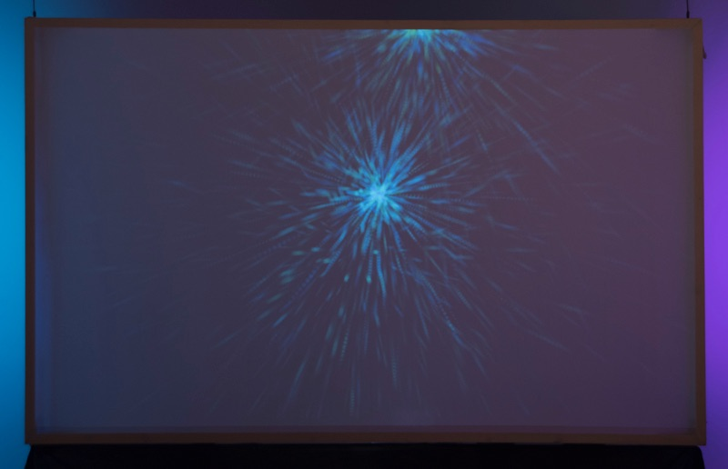
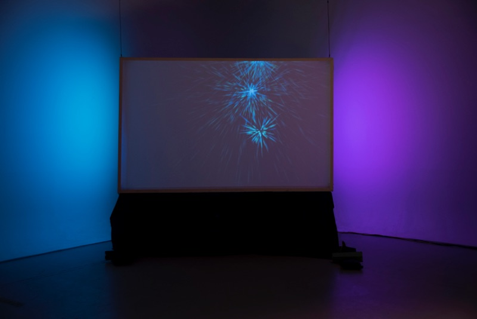
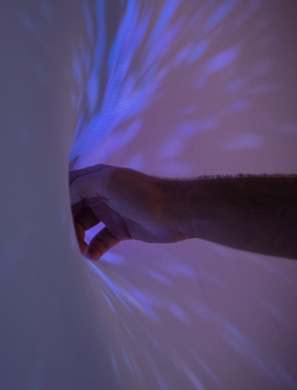
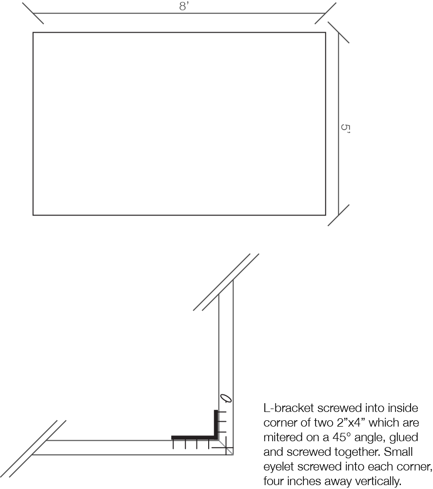
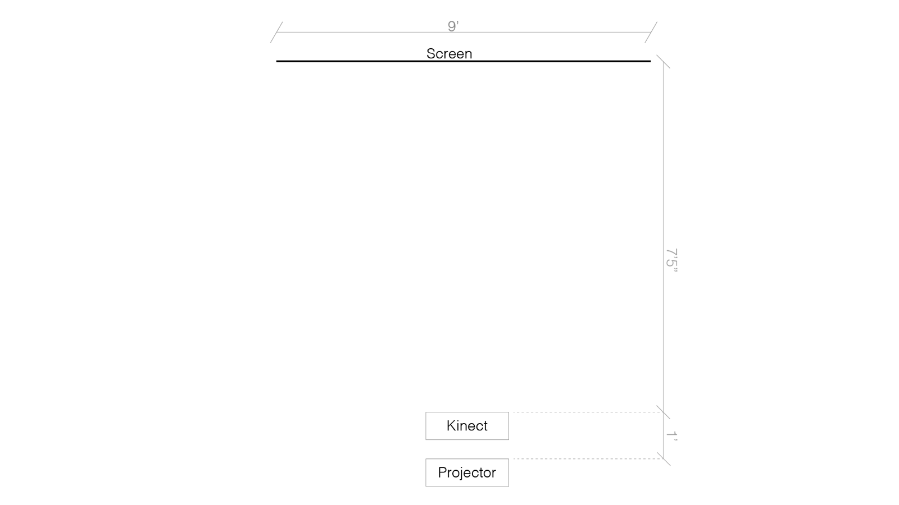

The veil
is an interactive installation that uses a kinect to detect changes in the distance from the spandex screen. This creates a soft input device for the user to create stunning visuals by touching a screen. The Veil was done as a collaboration with Lucas Teng. Content:  

Details
-Interactive installation
- Xbox Kinect
- Rear projected screen made from spandex
- addressable RGB LEDs
- Arduino
- Dark environment
Supplied by artist:
- Screen
- Kinect
- Arduino and LEDs
- Laptop
Supplied by gallery:
- Projector
- one 20 amp 120V outlet
- Sturdy way to fix screen, must be able to handle many people pressing on it.
- white area behind screen to cast light onto (see pictures)

